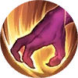
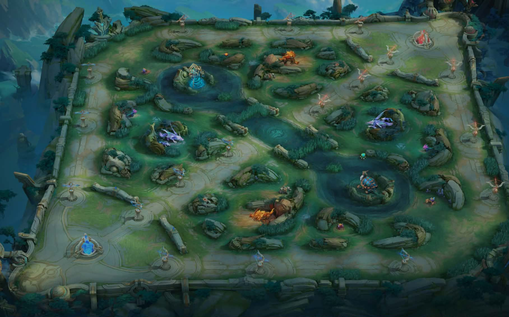

The Jungler is one of the most influential roles in Mobile Legends: Bang Bang. Instead of staying in a single lane, the Jungler focuses on defeating jungle monsters, securing buffs, Turtle, and Lord, while rotating across the map to assist teammates through timely ganks. A skilled Jungler can create advantages for the entire team by controlling objectives and maintaining a strong farming pace.
Jungle Area
Buffs
Turtle
Lord
Retribution
Assassin Emblem
Marksman Emblem
Fighter Emblem
Assassin
Fighter
Clear jungle camps consistently to gain gold and experience faster than opponents.
Prioritize Turtle and Lord to give your team map control and powerful advantages.
Support teammates by rotating to different lanes and helping secure eliminations.
A common Jungle rotation begins with either the Purple Buff or Orange Buff. Many players start on the buff closest to the EXP Lane so they can reach Level 4 and rotate to the Gold Lane for an early gank.

Retribution is essential for every Jungler because it allows faster jungle clearing and helps secure Turtle and Lord.
Provides additional mobility and damage, making it the preferred emblem for many Jungle heroes.
Grants attack speed and sustained damage, making it suitable for Junglers that rely on basic attacks to farm fast.
Offers balanced offense and durability, ideal for Fighter Junglers that engage in extended fights.
